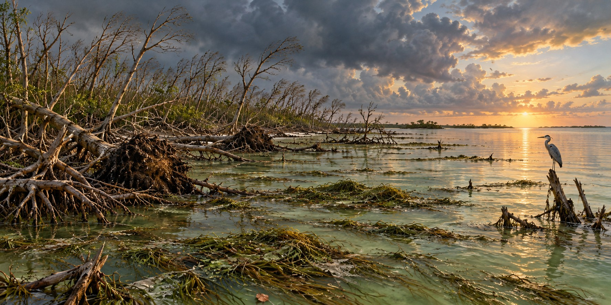

Hurricanes and the Everglades
The Wetlands That Protect Florida Also Pay the Highest Price

On a single studied island in Everglades National Park, researchers found that Hurricane Irma had snapped, uprooted, or stripped major limbs from forty to sixty percent of the tall trees they surveyed. NASA scientists, who had flown lidar-equipped aircraft over the same wetlands to study a slower phenomenon, saltwater creeping into freshwater marshes as seas rose, found themselves holding an unplanned before-and-after record of one of the most dramatic days of damage the Everglades had seen in years.
A Buffer That Pays the Price
The Everglades’ coastal marshes and mangrove forests absorb excess rainfall, reduce inland flooding, and lessen the force of storm surge before it reaches the communities farther inland. The U.S. Geological Survey describes the tradeoff plainly: in serving that protective role, the wetlands themselves sustain severe damage. Hurricane-force winds strip leaves and limbs or fell whole trees, while surge and the sediment it carries can smother tree roots and slow recovery for years.
Four major storms have struck this ecosystem with enough force to leave a measurable scientific record: Andrew in 1992, Katrina and Wilma in 2005, and Irma in 2017.
Andrew’s Mangroves, Knocked Flat
Andrew passed directly over both Biscayne and Everglades National Parks. The USGS describes major structural damage to the parks’ mangrove forests as perhaps the storm’s most dramatic ecological effect, with mangroves knocked down or severely damaged in South Florida. The USGS summary’s roughly 28,000-hectare wetland damage figure combines Florida and Louisiana, both struck by Andrew.
Researchers using Landsat satellite imagery of 1992 could pinpoint the timing of the damage, finding landscape change that matched Andrew’s landfall date rather than any other event of that busy season.
Defoliated and Still Standing
Field researchers who surveyed Everglades mangroves four to five months after Wilma, alongside damage from Katrina earlier the same season, documented partial-to-complete defoliation and substantial canopy damage. Some of it came from wind alone and some from surge that, in parts of the coastal zone, exceeded two meters.
The distinction matters for recovery. A mangrove stripped of leaves by wind can often refoliate within a single growing season. One whose roots are buried under surge sediment, or whose soil salinity has been pushed past what the species tolerates, faces a longer and less certain recovery.
Irma, Measured From Space
NASA used airborne G-LiHT measurements and Landsat imagery to compare mangrove conditions before and after Irma. A later analysis found canopy damage across 62 percent of southwest Florida mangroves. Where stormwater remained trapped, stagnant salty conditions could prevent recovery even after winds had passed. The damage was therefore more than a count of fallen trees.
Seagrass Mats as Far as the Eye Could See
Dr. Stephen Davis, a wetland ecologist with the Everglades Foundation, surveyed Florida Bay by aircraft after the storm and reported mats of uprooted seagrass floating as far as he could see. The bay was already struggling: a drought-triggered die-off had killed more than forty thousand acres of turtle grass in 2015, followed by algal blooms in 2016. A weakened system absorbs a new shock less well, and researchers worried that decomposing seagrass could fuel more algal blooms and fish kills.
The Storm That Fertilizes What It Destroys
Peer-reviewed research on Irma’s surge found that it delivered a pulse of phosphorus-rich sediment into the mangrove forests, during the brief storm-surge event. The Everglades is oligotrophic, naturally starved of phosphorus, so even a brief pulse can measurably influence mangrove growth and structure in the following months and years. The same storm destroys mature trees and leaves behind a fertilizer that helps the forest’s longer-term recovery, a complexity that resists a simple story of pure destruction.
Quick Facts
| Andrew (1992) | Severe South Florida mangrove damage; USGS 28,000-hectare total combines Florida and Louisiana |
|---|---|
| Katrina and Wilma (2005) | Partial-to-complete defoliation and canopy damage, observed up to five months later |
| Irma (2017) | Crossed Everglades National Park on September 10; surge reached into freshwater marshes and mangroves |
| Irma tree damage | NASA analysis: canopy damage across 62% of southwest Florida mangroves |
| How it was measured | NASA G-LiHT airborne measurements and Landsat imagery before and after Irma |
| Florida Bay | Seagrass mats floating after Irma, on top of a 2015 die-off of more than 40,000 acres of turtle grass |
| Surprising finding | Surge deposited phosphorus-rich sediment during the surge event, fertilizing mangrove growth |
| Core tension | Wetlands buffer storms for people, and absorb severe damage doing it |
Did You Know?
NASA’s Everglades lidar survey was designed to study rising seas, and Irma turned it into a hurricane damage record.
A mangrove stripped of leaves by wind can often regrow them within a season; one buried in surge sediment may not.
A brief surge delivered a pulse of phosphorus to a landscape that is normally starved of it.
Vocabulary
Mangrove: a salt-tolerant tree that grows along tidal coasts and shields shorelines from waves and surge.
Defoliation: the loss of leaves from a tree or forest.
Oligotrophic: naturally low in nutrients such as phosphorus.
Lidar: a laser-based remote sensing method that measures the height and structure of vegetation.
Discussion Questions
1. How can the same storm both damage a mangrove forest and help it grow?
2. Why does the cause of damage, wind or surge, change how fast a forest recovers?
Related Articles
FLH-0027 — Why Lake Okeechobee Became Dangerous
FLH-0007 — Hurricane Andrew (1992)
FLH-0011 — Hurricane Irma (2017)
FLH-0029 — Take Care of the Water
Sources
NASA Earth Observatory / NASA Science. “Mapping Hurricane Damage to Everglades.” earthobservatory.nasa.gov; science.nasa.gov
U.S. Geological Survey. “LCMAP Change Stories: Hurricanes in the Everglades.” usgs.gov
Florida International University, Wetland Ecosystems Research and Coastal Sustainability Lab. “Hurricane Irma Effects on Florida Everglades Mangroves.” wetland.fiu.edu
National Wildlife Federation Blog. “Restoring Paradise After Hurricane Irma.” (Dr. Stephen Davis). blog.nwf.org
Proceedings of the National Academy of Sciences. “Hurricanes Fertilize Mangrove Forests in the Gulf of Mexico (Florida Everglades, USA).” pmc.ncbi.nlm.nih.gov
Smith, T.J., et al. “Cumulative Impacts of Hurricanes on Florida Mangrove Ecosystems.” Wetlands 29 (2009).
USGS — Andrew damage and geographic scope
NASA — Trapped saltwater and mangrove mortality after Irma
Castañeda-Moya and colleagues — Hurricane nutrient deposition